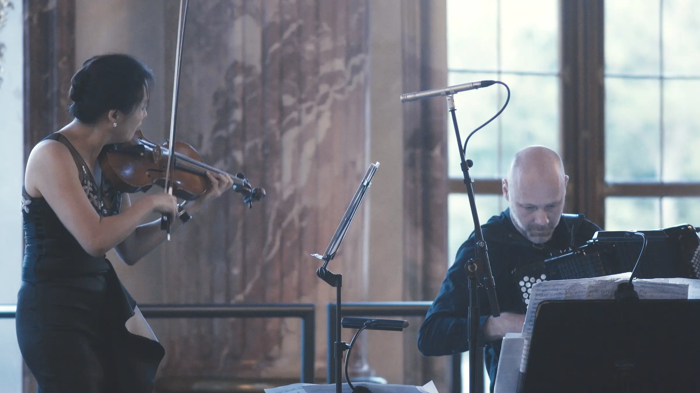
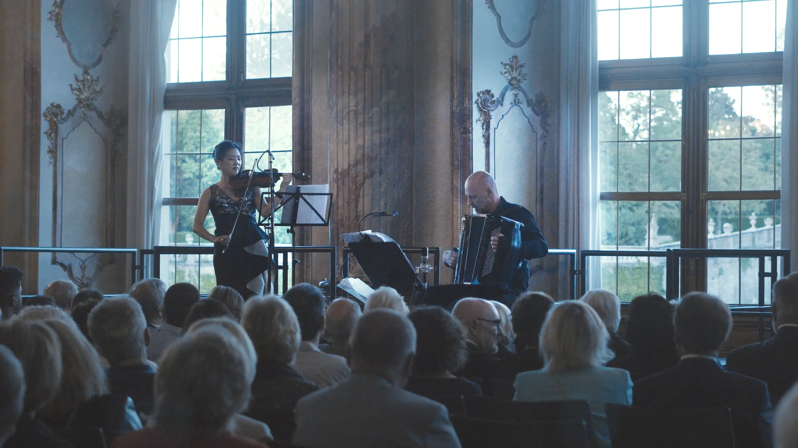
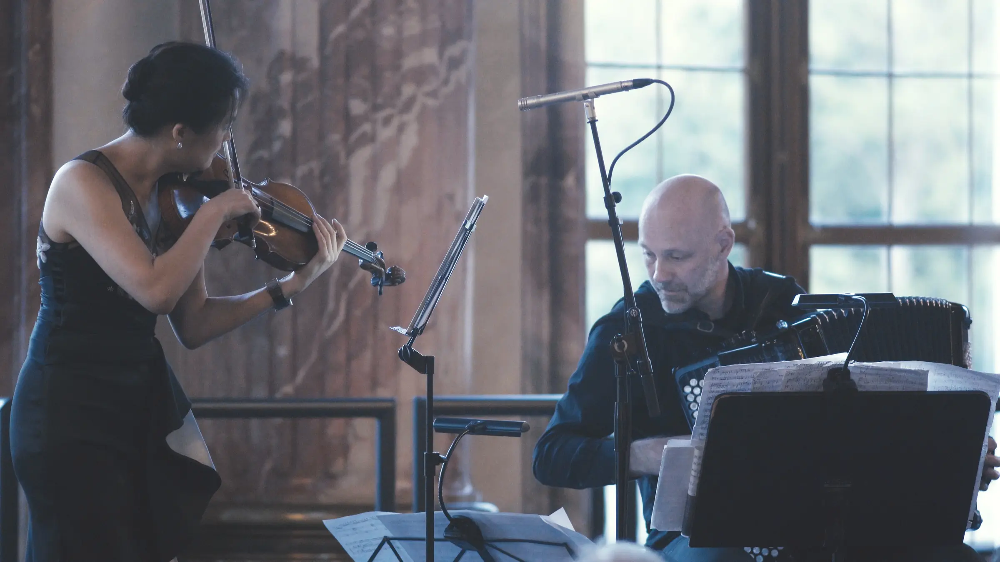
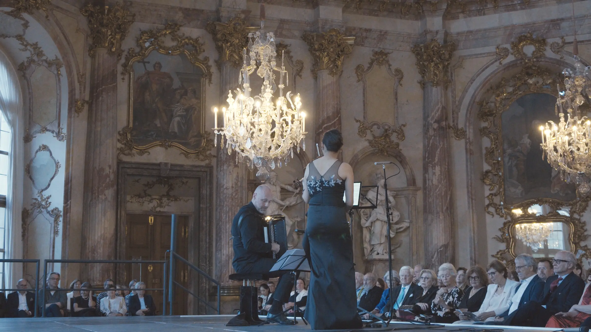

Vivaldi meets Piazzolla — „Acht Jahreszeiten"
ZONTA ist seit über 100 Jahren ein weltweit tätiger, überparteilicher, überkonfessioneller und weltanschaulich neutraler Zusammenschluss berufstätiger Frauen, die sich dafür einsetzen, die Lebenssituation von Frauen und Mädchen in rechtlicher, politischer, wirtschaftlicher, beruflicher und gesundheitlicher Hinsicht zu verbessern.
Jubiläumskonzert 40 Jahre ZONTA CLUB WÜRZBURG. Der ZONTA Club Würzburg beteiligt sich an internationalen Projekten gegen Kinderehen und Zwangsverheiratungen. Wir unterstützen aktuell z.B. junge Frauen aus Nepal. Auf lokaler Ebene insbesondere die Würzburger Frauenhäuser sowie Frauen in schwierigen sozialen und wirtschaftlichen Verhältnissen und in Notsituationen.
Neue Klangwelten entdecken Vivaldi meets Piazzolla „Acht Jahreszeiten“. Daneben wollen wir aber auch begabte und engagierte Mädchen und Frauen stärken. Ein großes Anliegen sind uns u.a. die Vergabe des Young Women in Public Affairs-Awards an sozial engagierte Schülerinnen wie auch die Ermutigung von Nachwuchswissenschaftlerinnen in naturwissenschaftlichen und technischen Fächern durch die Auszeichnung mit dem ZONTA- Wissenschaftspreis. Neu hinzugekommen ist der ZONTA Sparkling Award, der Gründerinnen und deren Unternehmertum und Courage auszeichnet.
Mehr zu den Förderprojekten auf www.zonta-wuerzburg.de